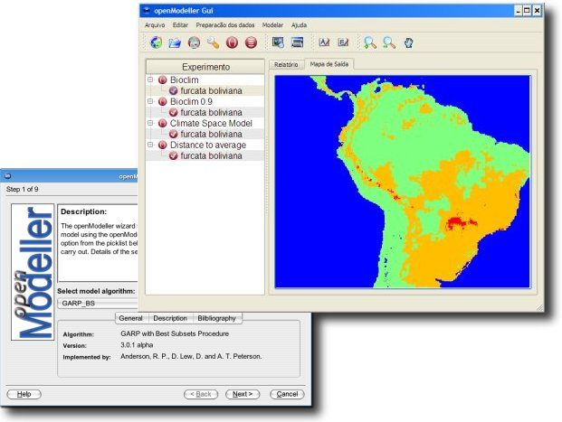

|  |
The openModeller desktop graphical user interface provides a user friendly front end to the openModeller library. The program runs on both GNU/Linux and Windows (9x,ME,2k,NT,XP). In the future a Mac OSX binary will also be available. There are two versions of the application.
The newer openModeller Desktop Version 1 is the version now under active development. The older version of the application (openModeller Desktop Version 0) can be run as a standalone GUI application or as a plugin for Quantum GIS.
Below you will find more details on each version.
openModeller Desktop Version 1
Main Features
Note: The web service plugin is still considered experimental.
The software is available in source form (all platforms) and as a binary installer package for Microsoft Windows. In future releases we will make binaries available for Mac OSX and GNU/Linux. If you are an Ubuntu Linux user, step by step instructions for building the application on your system are available. Visit the openModeller download page to get the latest version of the application.
A tutorial video is available (~124mb!) which will help in getting started with openModeller Desktop.
(no longer maintained)
The original version of the application (openModeller Desktop Version '0') can be run as a standalone GUI application or as a plugin for Quantum GIS. The program takes the form of a 'Wizard', collecting information from the user via a number of screens. The selections made are saved between sessions thus streamlining the modelling process on subsequent occasions. Click on the thumbnail images below to view full size screen captures. Alternatively, if you have a good internet connection, you may like to view the flash movie demo. The last available version of openModeller visit the download area.